地政学
ミネアポリスはミシシッピ川上流と五大湖圏、大平原、カナダ方面を結ぶ内陸拠点です。州都セントポールと行政、教育、物流を分担し、農業地帯、先住民の土地、中西部政治を都市圏で結びます。冬の気候も政策を試します。
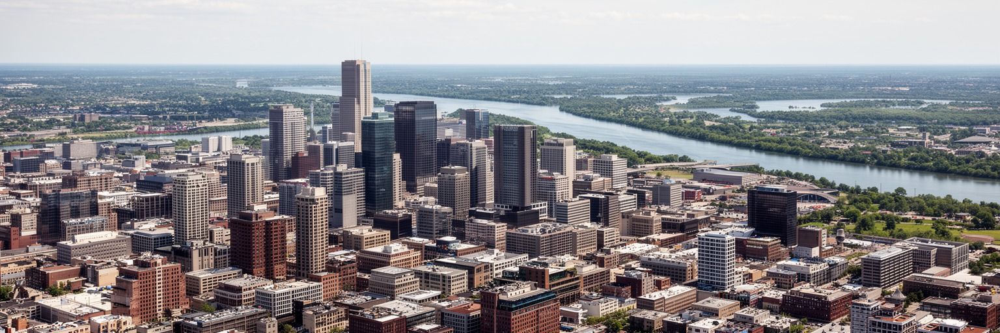
🇺🇸 アメリカ合衆国 / 北米 / World City Atlas
ミシシッピ川、湖、製粉業の記憶、医療と食品企業、移民地区、音楽、劇場、冬の生活が重なるツインシティの中核都市です。
都市の骨格
ミネアポリスはセントポールと双子都市をなし、製粉、鉄道、医療、大学、劇場、移民社会が寒冷地の水辺に集まります。
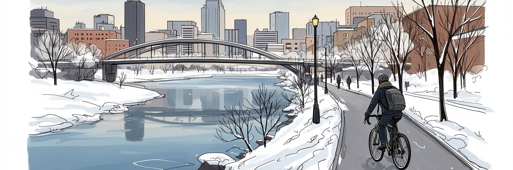
ミネアポリスはミシシッピ川上流と五大湖圏、大平原、カナダ方面を結ぶ内陸拠点です。州都セントポールと行政、教育、物流を分担し、農業地帯、先住民の土地、中西部政治を都市圏で結びます。冬の気候も政策を試します。
水力を使う製粉業から、食品、医療機器、保険、金融、小売本社、大学、物流へ重心を移しました。専門職の賃金と、病院、倉庫、清掃、飲食、介護、除雪の労働が同じ都市を支えます。移民労働も日々欠かせません。
ルター派、黒人教会、モスク、寺院が移民の互助を担います。プリンスの音楽、劇場、文学、ソマリ料理、ラジオとSNS、冬のライブが、大学の学生街や寒い街路に多層の記憶を置きます。信仰は暮らしと学びの支柱です。
湖畔公園、自転車道、川の橋、劇場、美術館、球場は訪問者を招きます。住民には冬の通学、家賃、保育、高齢者の通院、人種格差、警察改革、暖房費が日常の条件です。雪の匂いと水辺の美しさが課題と近い街です。
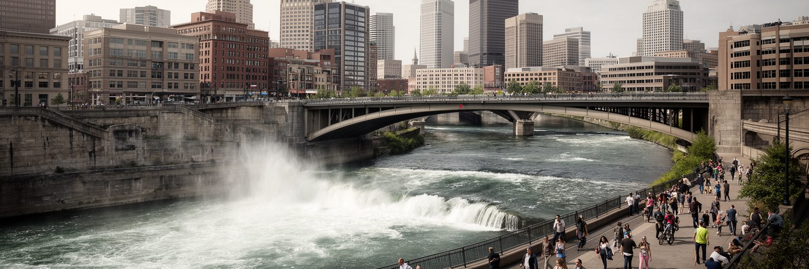
ミネアポリスの都市形成は、ミシシッピ川上流とセントアンソニー滝を抜きに説明できません。滝の落差は十九世紀の製材と製粉に動力を与え、小麦地帯、鉄道、倉庫、川沿いの工場を結びました。都心の石造りの製粉所跡や橋は、産業遺産であると同時に、川を公共空間へ戻す再生の舞台です。川は都市を東西に分ける線であり、大学、住宅、劇場、オフィス、公園を結ぶ軸でもあります。ミル地区の再開発は観光と住宅を呼び込みましたが、地価上昇や古い労働記憶の見えにくさも伴います。橋から眺める滝は美しい景観ですが、その下には先住民の土地利用、米国の領土拡張、産業資本、河川改修の歴史が重なります。洪水、護岸、冬の凍結、水質管理は、今も市政の実務です。川沿いを歩くと、古い製粉都市が文化施設、大学、アパート、散策路へ姿を変えたことが分かります。ですが水辺へのアクセスは地区ごとに均等ではなく、交通、治安感覚、住宅費が利用のしやすさを左右します。大学キャンパスや住宅街から川へ下りる道の質も、日常的な親しみを変えます。ミネアポリスでは、川を背景として眺めるだけでなく、都市の産業、記憶、土地、余暇を組み替える骨格として読むことが大切です。水辺の再生は、過去を消す開発ではなく、誰が川に近づけるかを問う公共政策でもあります。橋はその問いを毎日見せます。
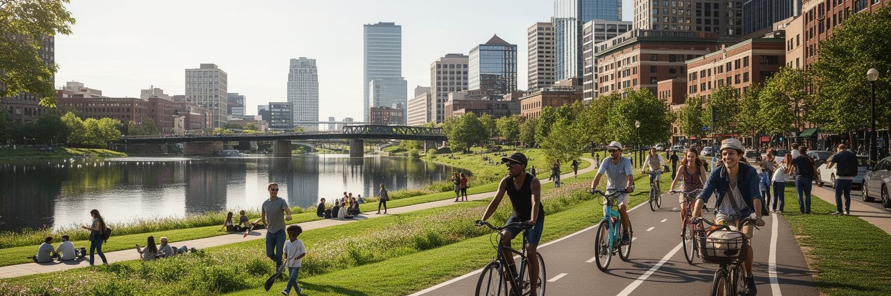
ミネアポリスは「湖の都市」として住民に記憶されています。ベデ・マカ・スカ、ハリエット湖、アイルズ湖、シーダー湖、ノコミス湖などが公園と自転車道で結ばれ、夏は水遊び、ピクニック、ランニング、冬はスケートや雪道の散歩が日常になります。湖畔は住宅価格を押し上げる景観資産である一方、公共の水辺として市民に開かれてきた歴史も持ちます。公園制度は都市の誇りですが、湖に近い地区と遠い地区で、健康、余暇、移動の経験は異なります。水質保全、外来種、雨水流出、湖岸侵食、冬の塩害は、きれいな景色の裏で続く管理課題です。湖の名前をめぐる議論も、先住民の記憶を都市地図へ戻す政治を示します。自転車道や緑道は環境都市の象徴として語られますが、冬の除雪、照明、治安、住宅地との接続が整わなければ、誰もが使える移動手段にはなりません。湖畔の豊かさは、都市が自然を残した結果ではなく、買収、設計、維持、住民運動によって作られた公共財です。さらに公園は孤立した緑地ではなく、学校、住宅、商店街、バス路線と結びついて初めて日常の健康資源になります。週末には子どものサッカー、年配者の散歩、犬連れ、フードトラックの匂いが同じ岸辺に集まります。ミネアポリスの生活の魅力は、この水辺の近さにありますが、その価値を分かち合えるかどうかが、都市の公平さを測る物差しになります。湖は都市ブランドである前に、市民が暑さ、孤独、運動不足から逃れる生活の場所です。
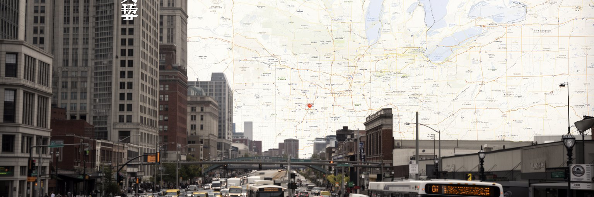
ミネアポリスは単独で完結する都市ではなく、州都セントポールと並んでツインシティを作ります。ミネアポリスは商業、大学、文化、医療、企業本社の力が強く、セントポールは州政府、議会、行政機関、古い鉄道都市の顔を持ちます。両市の間にはミシシッピ川、州道、ライトレール、大学キャンパス、郊外自治体が広がり、通勤と政策は都市境界を越えて動きます。州政治では、都市部のリベラルな有権者、郊外の中間層、農村部の保守的な地域がせめぎ合い、教育、警察、税、住宅、移民、医療、交通投資が論点になります。ミネアポリスの出来事は、州全体の対立や制度改革を映す鏡になりやすいです。ジョージ・フロイドさんの死後、警察改革、人種的正義、治安、商店街の復興をめぐる議論は全国へ広がりました。都市の政治は理念だけでなく、除雪、道路補修、家賃補助、学校予算、公共交通の本数という生活の細部で試されます。ツインシティの強みは、州都機能と経済中枢が近く、大学や市民団体が政策へ関わりやすい点です。弱みは、自治体が多く、住宅や交通の責任が分散し、不平等を都市圏全体で調整しにくい点です。郊外の税基盤や学校制度が都市中心部の課題と切り離されると、同じ都市圏で機会の差が固定されます。二つの中心を持つ構造は、多様な声を生むと同時に、合意形成の難しさも抱えています。
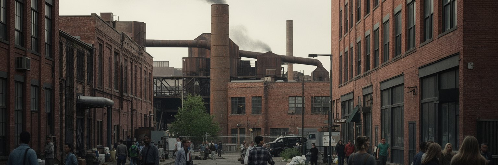
ミネアポリスはかつて世界有数の製粉都市として知られました。大平原の小麦、鉄道、ミシシッピ川の水力が集まり、粉にする技術、倉庫、取引、包装、輸送が一体となって都市を成長させました。現在、川沿いの巨大な工場は博物館や住宅、オフィスへ転用されましたが、食品と農業関連の知識は地域経済に残っています。食品会社、小売、物流、包装、研究開発、大学の農業・栄養研究は、都市を周辺の農業地帯と結び続けます。製粉の歴史は華やかな産業物語である一方、粉じん爆発、危険な労働、移民労働者、独占、価格変動の記憶も含みます。穀物を扱う都市は、天候、肥料、鉄道運賃、国際市場、消費者の食卓に敏感です。現代の食品産業でも、工場労働、倉庫、冷蔵物流、品質管理、マーケティングが重なり、専門職と現場労働の距離が見えます。健康志向や代替タンパク、地元農産物の市場は新しい価値を生みますが、低所得世帯の食料アクセス、学校給食、移民商店街の小売も同じ食の経済です。ミッドタウン・グローバル・マーケットや協同組合の店、ジューシー・ルーシーの店先、ソマリ茶の香りも食の都市を見せます。ミネアポリスを食品都市として見ると、古い滝の動力から、研究室、スーパーマーケット、倉庫、家庭の台所までが一本の線でつながります。小麦粉の白さの裏には、土地、労働、水、輸送、企業戦略がありました。食は政治でもあります。
現代のミネアポリス都市圏は、医療、保険、金融、小売、食品、医療機器、大学研究が厚い雇用を作る地域です。病院、診療所、保険会社、研究施設は高い専門性を持ち、看護師、技師、事務、清掃、警備、給食、通訳、介護の仕事も同時に必要とします。大手企業の本社や地域拠点は、法務、会計、デザイン、IT、人事、広告、物流を呼び込み、都心や郊外オフィスの需要を支えます。小売業の本社機能は、店舗労働やサプライチェーンの現実と結びつき、都市圏外の消費にも影響します。経済の強さは高賃金職を生む一方、医療費、保険制度、住宅費、通勤費、資格取得の壁を通じて格差も広げます。病院が地域最大級の雇用主である場合、患者の健康だけでなく、周辺地区への採用、購買、奨学金、交通支援が都市政策になります。企業本社は慈善活動や文化施設支援で存在感を持ちますが、税優遇や郊外移転、リモート勤務の広がりは都心の商業にも影響します。大学や短大が職業訓練と研究をつなげる時、移民や低所得層の若者にも上昇の経路が開きます。ミネアポリスの経済を読むには、ブランド名よりも、どの仕事が安定し、誰が昇進でき、どの地区の若者が専門職へ入れるかを見る必要があります。強い本社経済が地域全体の機会になるかは、教育、交通、住宅、医療アクセスを同時に整える制度にかかっています。
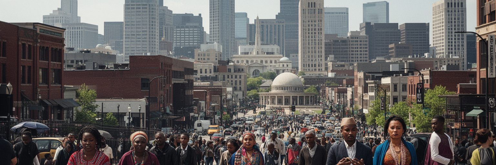
ミネアポリスの社会は、北欧系やドイツ系移民の記憶だけでなく、黒人コミュニティ、ソマリ系、エチオピア系、ラテン系、モン族、ラオス系、先住民など多様な人々によって作られています。ルター派教会、カトリック教会、黒人教会、モスク、シナゴーグ、仏教寺院、コミュニティセンターは、祈りの場であると同時に、言語支援、就職、食料配布、子どもの教育、葬儀、移民手続きの相談を担います。ソマリ系住民の存在は、商店街、飲食、タクシー、倉庫、政治参加、学校の多言語対応を通じて都市の姿を変えました。モン族やラテン系の市場も、家族経営と広域ネットワークを結びます。移民文化は食や祭りとして歓迎される一方、イスラム嫌悪、警察との緊張、住宅差別、低賃金労働、言語の壁も残ります。宗教施設は保守的な価値観を持つこともありますが、災害時や貧困時には互助の網として機能します。都市の多文化性を本当に理解するには、料理の多様さだけでなく、学校通訳、医療通訳、送金、礼拝時間、女性の就労、若者のアイデンティティまで見る必要があります。政治参加が進む一方で、世代間の価値観や就業機会の差も表面化します。ミネアポリスでは、寒い気候の中で新しい移民が互いに支え合い、古い移民都市の枠組みに別の言語と信仰を重ねています。その重なりが都市の未来を作ります。
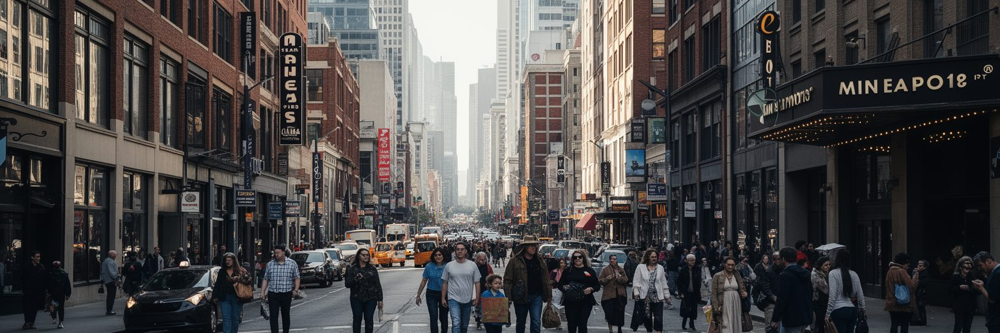
ミネアポリスの文化は、プリンスの音楽的記憶、クラブ、劇場、文学、美術館、大学、地域ラジオによって独自の厚みを持ちます。ファースト・アベニューのような会場は、ポップ、ロック、ファンク、ヒップホップ、インディー音楽をつなぎ、寒い夜の社交場になりました。劇場の数も多く、ガスリー・シアターをはじめ、舞台芸術は市民の教育、観光、批評文化を支えます。美術館や文学フェスティバル、独立書店、詩の朗読、公共アートは、企業都市とは別の想像力を育てます。文化の力は名所だけでなく、学校の音楽室、教会の合唱、移民の祝い、黒人コミュニティの表現、先住民アーティストの発信にもあります。ですが文化空間は家賃や助成、夜間交通、治安、観客層に左右されます。人気地区の再開発が進むと、若い演奏者や小劇場が場所を失うこともあります。プリンスの名声は都市の象徴ですが、それを観光記号として消費するだけでは、黒人音楽、地域スタジオ、労働者の夜の時間は見えません。ミネアポリスの表現は、寒さ、孤独、信仰、移民、抗議、湖畔の余暇を混ぜ合わせて育ちました。舞台とライブハウスは、都市が自分の痛みと楽しさを声にする場所です。アクアテニアルやプライド、SNSで広がる小規模ライブも、夏の短さを濃く使う文化です。冬の長い夜に集まれる場所があることは、精神的な公共インフラでもあります。
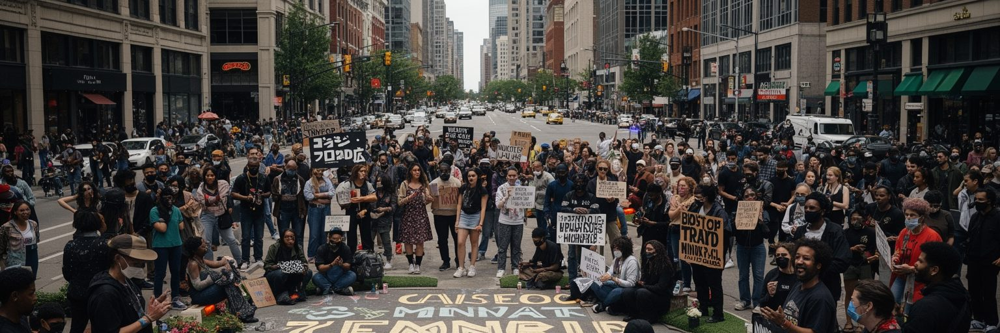
ミネアポリスは、ジョージ・フロイドさんの死をきっかけに、警察暴力、人種的正義、治安、地域の信頼をめぐる世界的な議論の中心になりました。交差点や壁画、追悼の場は、単なる記念空間ではなく、黒人住民が長く経験してきた監視、過剰な力の行使、住宅差別、学校格差、雇用差別を可視化する場所です。抗議は都市を揺さぶり、商店街の焼失や保険、復興、公共安全の不安も生みました。警察改革を求める声と、暴力犯罪への不安、救急対応の必要性は、同じ住民の中でも複雑に重なります。制度を変えるには、警察予算の配分だけでなく、精神保健、住宅支援、若者の雇用、学校、交通、薬物依存支援、家庭内暴力対応を含めた広い安全政策が必要です。ミネアポリスの課題は、善悪を単純に分けるより、誰が守られ、誰が危険視され、誰の通報が信じられるのかを問います。観光客が追悼地を訪れる時も、写真を撮るだけでなく、そこに暮らす人の疲労と誇りを尊重する姿勢が求められます。商店の復興、保険料、地域雇用、夜間の安心は、理念を暮らしへ戻す具体的な課題です。学校や教会、近所の店が信頼を取り戻す時間も必要です。声を聞く場も要ります。都市の傷はすぐには癒えませんが、記憶を公共空間に残し、政策を具体的に変え、日常の信頼を作り直すことが、世界へ知られた都市の責任になります。
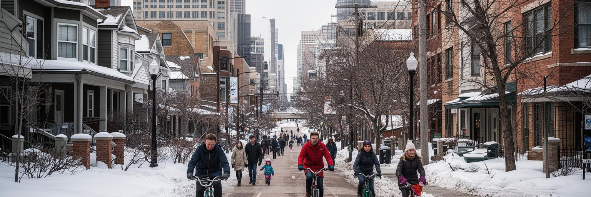
ミネアポリスの暮らしは、湖畔の美しさや自転車都市の評価だけでは語れません。家賃、住宅供給、学校区、冬の暖房費、公共交通、除雪、保育、食料品店への距離が、毎日の選択を決めます。市は一戸建て中心の用途規制を見直し、住宅の多様化を進めようとしてきましたが、近隣の反発、建設費、金利、低所得者向け住宅の不足は続きます。湖に近い地区や人気の商業地では価格が上がり、長く住んできた住民が押し出される不安があります。一方、北側や南側の一部地区では空き家、投資不足、治安不安、学校資源の偏りが暮らしに影を落とします。住宅政策は建物の数だけでなく、誰がどの場所へ住めるか、通勤と学校にどれだけ時間を使うか、資産形成の機会があるかを決めます。自転車道やライトレールは便利ですが、冬の除雪、駅周辺の安全、運賃、乗り換えが整わなければ生活の基盤になりません。雪が降れば、道路だけでなく歩道、バス停、学校周辺を誰がどの順番で除雪するかが生活の公平さになります。低所得世帯や新移民にとって、暖房費の補助、家賃支援、多言語サービスは都市の優しさではなく権利に近いです。ミネアポリスの日常は、静かな住宅街、湖畔の散歩、学校の送り迎え、夜勤明けのバス、雪かきの朝が重なって成り立ちます。住まいの制度を見れば、都市の平等がどこまで実感できるかが分かります。
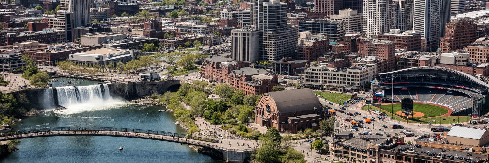
ミネアポリスを旅するなら、ミシシッピ川沿いの製粉所跡、セントアンソニー滝、ストーンアーチ橋、湖畔公園、ウォーカー・アート・センター、ミネアポリス美術館、ガスリー・シアター、ファースト・アベニュー、ターゲット・フィールドを結ぶと、短い滞在でも都市の層が見えます。ツインズ、ティンバーウルブズ、リンクス、バイキングスの試合日は鉄道駅やバーの音も変わります。夏は湖畔の自転車道と野外イベントが明るく、冬は劇場、音楽、スカイウェイ、雪景色が別の魅力を作ります。セントポールへ足を延ばせば、州議会、古い鉄道駅、教会、歴史地区が加わり、ツインシティ全体の役割分担も分かります。観光の表面には、ホテル、飲食、清掃、警備、交通、イベント設営、除雪の労働があります。追悼地や抗議の記憶を訪ねる場合は、住民の生活空間であることを忘れず、敬意を持って歩きたいです。移民商店街や市場では、ソマリ料理、ラテン系の店、アジア系食材、北欧系の名残が同じ都市に並びます。ミネアポリスの魅力は、巨大観光都市の派手さではなく、川、湖、音楽、劇場、企業、移民、社会運動が近い距離で見えることです。水辺を楽しみ、舞台を見て、住宅地の交通や冬の暮らしにも目を向けると、経済規模だけでは測れない都市の強さと課題が立ち上がります。移動時間に余裕を持つと地区の違いも見えます。旅は景色の消費ではなく、都市が誰の労働と記憶で成り立つかを学ぶ時間になります。